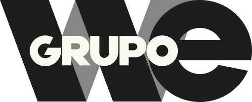

Somos um dos
maiores grupos
de comunicação
100% nacional
e independente.

de mídia*
integrados


o desafio ou o momento
– temos a solução certa
para cada cliente.
Para cada desafio, uma resposta.

EXISTIMOS?


objetivos
estratégicos

players
analisados

redes a serem
analisadas

dados em redes
sociais

via IA

I.A de territórios
e outros
formatos de
análise

de personas
(cenário atual).

calibragens e
recomendações
das Pessoas
Inesquecíveis
Pertencimento


comunicação / criativa /
multitarefas
o lifestyle ganha forma em
imagens, experiências e
histórias
para aproximação com
públicos mais jovens


 apresenta
apresenta


 apresenta
apresenta

Direção e lideranças de criação, mídia, dados, influência, atendimento e financeiro. É essa camada que transforma a estratégia em rotina — e a rotina em resultado.


 apresenta
apresenta
 Lake Baikal
Lake Baikal
Contexto
Terceiro condomínio do Golden Lake, bairro privativo de alto padrão da Multiplan, o Lake Baikal chegou com o conceito “Para viver no seu tempo”.
Desafio
Na hora de produzir a campanha, nem o condomínio nem o decorado existiam. Sem locação, uma captação tradicional estava fora de cogitação.
Solução
Escaneamos os influenciadores para criar character sheets e, a partir dos renders, geramos cenários em IA com nova camada de realismo: fotos em alta e um filme completo.


 apresenta
apresenta
 Melão Famosa
Melão Famosa
Contexto
Maior produtora e exportadora de melões do Brasil, a Agrícola Famosa levou o Melão Famosa às gôndolas de São Paulo e Fortaleza e precisava de presença forte nas redes.
Desafio
Uma comunicação always on, com força em mídia e linguagem social first, que conectasse de verdade com as pessoas, sem nenhuma produção feita com o produto.
Ideia
Humanizar o melão: com IA, ele virou um personagem carismático que treina, se arruma e entra nas trends, com cada ideia viabilizada na velocidade das redes.


Contexto
A crescente demanda dos clientes por agilidade, celeridade e dinamismo na entrega dos cronogramas mensais de redes sociais trouxe a necessidade de repensar processos e buscar novas soluções. O desafio era ganhar velocidade na produção sem comprometer a qualidade, a originalidade e a consistência criativa da entrega.
Insight
A combinação entre a sensibilidade estética e o olhar estratégico da direção de arte com o potencial da inteligência artificial abriu um novo caminho para a criação. A IA passou a atuar como uma ferramenta de exploração, experimentação e otimização, ampliando possibilidades e acelerando processos sob a curadoria criativa do time.
Ideia
Fizemos da IA uma aliada do talento, somando inteligências. Por meio de um processo colaborativo entre direção de arte, repertório criativo e tecnologia, desenvolvemos conteúdos primorosos, originais e alinhados à essência de cada marca. Uma parceria em que a IA potencializa a criatividade e transforma agilidade em entregas de alto valor.


 apresenta
apresenta
 Dia das Mães
Dia das Mães
Desafio
Transmitir a emoção da data e construir um filme com o qual o público se identificasse, usando inteligência artificial sem cair num resultado engessado e sem vida, com baixo custo de produção.
Insight
Ilustrar o conceito “Toda mãe nasce no dia mais feliz da sua vida”: mãe e filho brincam com massinha e a realidade se mistura com o imaginário, conduzida pela narração dela.
Execução
Filme feito inteiramente com ferramentas de IA generativa: direção de arte em estética de massinha 3D e personagens consistentes cena a cena — pronto em uma semana.


motionMassinha 3D
 apresenta
apresenta
 Cuidar é mágico
Cuidar é mágico
Contexto
Um Dia dos Pais emotivo, a partir de uma verdade: “Nem todo pai salva o mundo, mas todo pai transforma a vida de alguém.”
Ideia
Romper com o clichê do pai super-herói: no conceito “Cuidar é Mágico”, o pai vira o protagonista do cuidado no dia a dia — e o Fado do Dente.
Execução
Filme produzido com IA generativa: o pai e o universo do Fado do Dente ganharam vida em cenas de fantasia que custariam caro numa produção tradicional.


Sumário
Credenciais WT.AG · 2026 · abertura e seis atos, 35 telas